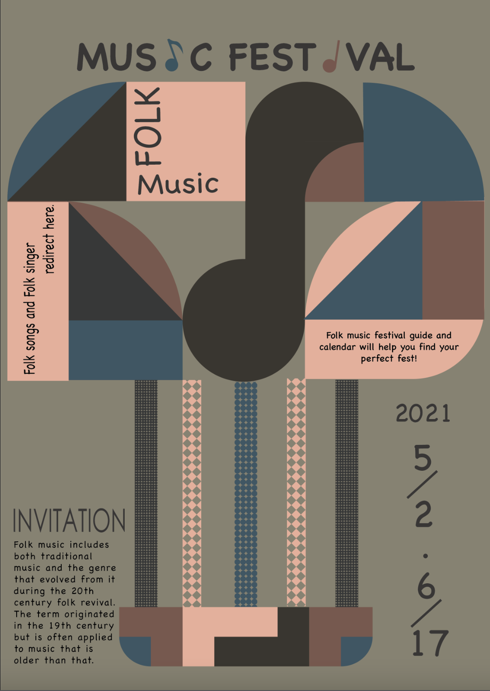

使用棕色系傳達Flok music給人的鄉村純樸印象，音符兩側的圓角象徵民俗歌謠傳達給大眾與世無爭、樂觀、圓融的生活態度。在畫面呈現民俗歌謠的經典樂器吉他。並在弦上使用簡單的圖騰襯托復古的印象。
The brown color is used to convey the simple and rustic impression of Flok music, and the rounded corners on both sides of the note symbolize the folk songs convey to the public the indisputable, optimistic and harmonious attitude towards life. The classic instrument guitar of folk songs is presented on the screen. And use simple totems on the strings to set off the retro impression.
